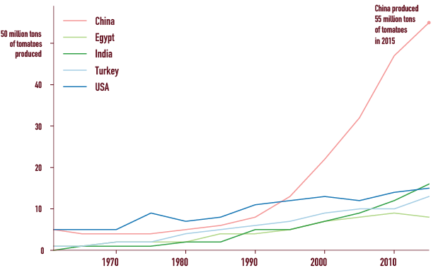

By Paivi Ala-Risku
Published July 29, 2018
Who could have imagined that China produces tomatoes over 10 times more than in 1990's?
A huge boom in China
Top 5 tomato producers in the world in 2015 and how their production has changed since 1965
 SOURCE: FAO